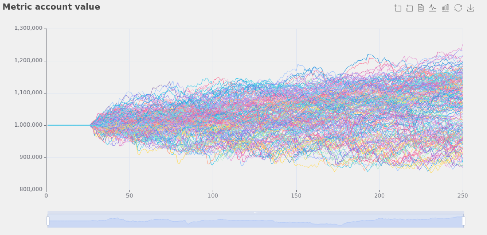
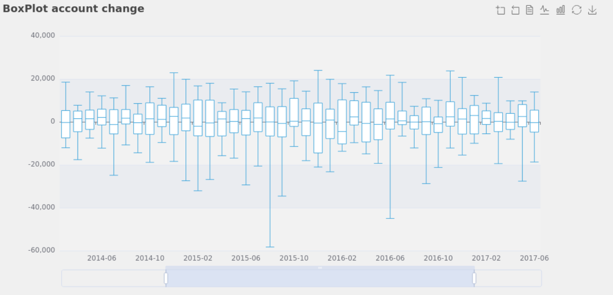

We can chart our future clearly only when we know the path that led to the present
Screenshots
When working in a Jupyter Notebook, roboquant comes with several types of charts that help to understand how the strategy is behaving. This pages contains some samples of those charts.
You can try out these charts yourself, since they all come from the visualization notebook.
Walk forward
Plot a metric during a walk-forward test to provide insight into the performance of the strategy during different timeframes. Here we plot the total account value (= cash + positions) and that provides insights how a strategy performs during different time periods. Clearly we can see that the strategy wasn’t profitable during every time frame.
Like most charts in roboquant, you can zoom into areas of interest. You can do so with the slider at the bottom of the chart or use the zoom option from the toolbox at the top right.
Random periods
An even more extensive back-test is to run the experiment over randomly sampled periods. In this example we selected the period to be 250 trading days. We then plot the results of all samples and this provide a good view of the maximum profit or loss of the strategy during for a certain duration.

Trades
Trades provide an overview of the trades for all the assets made during a certain time period. It can plot different aspects of a trade like the fee or volume. But one of the most useful ones is the realized profit and loss.

Candlestick
You can see when certain trades were executed in relation to the price of that asset at the same time. Especially for strategies based only on price actions this helps to validate if trades occurred when expected.

Asset allocation
See the asset allocation within the portfolio. If assets are denoted in different currencies, this will convert to the base currency of the account.

Calendar
Plot a metric for each day of the year to see how it performed over time. This presents a nice overview of good and bad performing days during the back test.
The slider at the top of the chart allows to filter the range of values that is of interest.

Box plot
Box plot aggregates a metric over a time interval so the different values for certain quantiles can be easily spotted. When we plot the change in account value as in the chart below, it provides quick insights into max draw downs and volatility of our strategy.
